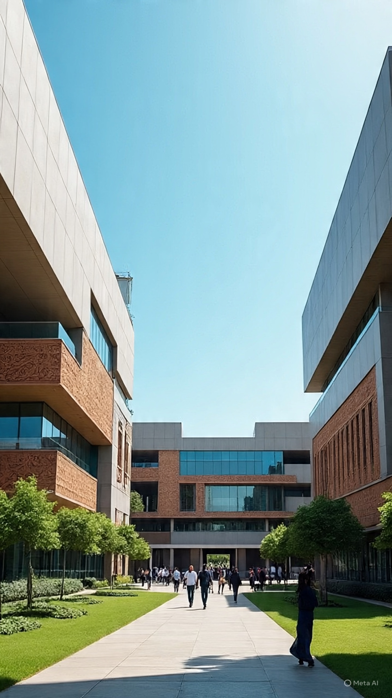

Kelina Hospital
Minimal Access Surgery
Kelina Hospital is an Endoscopic and Laser Surgery specialist hospital with focus on Minimal Access Sugeries

ThomasWelcome to
Kelina Hospital is a surgical hospital where a patient can have a major srgery today and go home same day or less than 24 hours after sugery. Sugery is our primary work in Kelina. Our theatres have the latest brand of equipment from the best companies in the world. We have been consistently selected above other hospital by foriegn medical missions in Nigeria.
The mission of Kelina Hospital is to promote, preserve and restore individual and family health by providing expert medical and surgical care within an innovative and dignified environment.
The mission of Kelina Hospital is to promote, preserve and restore individual and family health by providing expert medical and surgical care within an innovative and dignified environment.
The mission of Kelina Hospital is to promote, preserve and restore individual and family health by providing expert medical and surgical care within an innovative and dignified environment.
___________
Kelina Hospital is open 24 hours daily. Staff taking care of patients in the main service areas are available within the hospital round the clock.
Virtual Consultation is available for patient who are far away from our both locations. Patients can consult with our Sugeries before comming in for pre-operative tests and surgery.
24 Hours
24 Hours
24 Hours
24 Hours